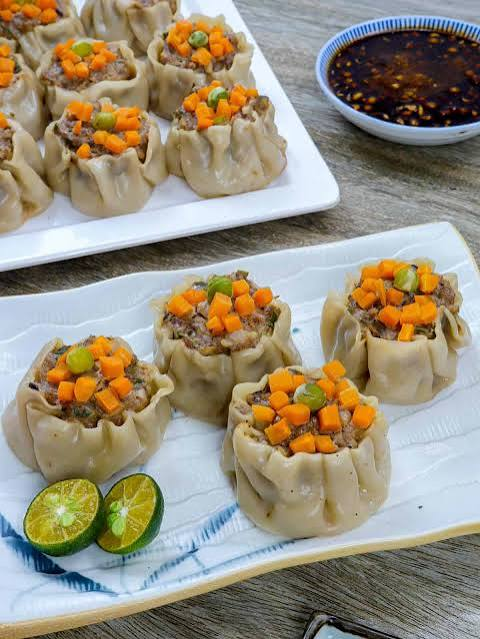

Siomai recipe guide

Description
It is a popular siomai in the Philippines and a local favorite.
You can find it everywhere especially from street vendors and it is very affordable large siomai costs 20 pesos for five pieces, while small siomai is 2 pesos per piece.
There are many varieties of siomai here including pork which is the crowd favorite, chicken,and shark fin but the one I’ll be showing you is pork siomai,as it is the most popular type here in the Philippines.
Ingredients
- 2 cups ground pork
- 1/2 pc onion, minced
- 4 tbsp spring onions, chopped
- 1/4 cup carrots, minced
- 1/4 cup singkamas, finely minced
- 1 pc Knorr Pork or Beef Cube, mashed
- 3 tbsp sesame oil
- 1 pc egg, beaten
- 1 tsp ground black pepper
- 1 tsp five spice powder (optional)
- wonton wrappers, as needed
- chopped spring onions and carrots for topping
Procedure
- Mix the ingredients in a large bowl until
combined.
- Place a small amount of filling in each wonton wrapper.
- Fold and seal the wrapper around
the filling.
- Top the siomai with chopped spring onions and
carrots.
- Steam for 20–25 minutes or until
fully cooked.
Serving
Once that's ready, add soy sauce and garlic; if you
want it spicy, you can also add chili garlic or chili
peppers.